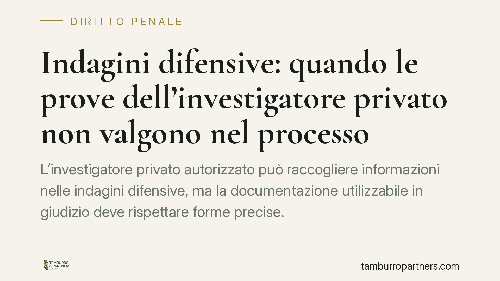

Indagini difensive: quando le prove dell'investigatore privato non valgono nel processo
L'investigatore privato autorizzato può raccogliere informazioni nelle indagini difensive, ma la documentazione utilizzabile in giudizio deve rispettare forme precise. Quando questi requisiti mancano, le prove rischiano l'inutilizzabilità radicale. Un tema cruciale per imputati, persone offese e difensori, che incide sulla tenuta probatoria in ogni rito, compreso l'abbreviato.

Il nodo: raccogliere o documentare la prova
Nelle indagini difensive esiste una distinzione spesso trascurata ma decisiva: un conto è ricercare una fonte di prova, altro conto è documentarla in forma utilizzabile nel processo.
La confusione tra i due piani è all'origine di molti errori. L'investigatore privato può concorrere alla prima attività; la seconda, invece, è presidiata da regole formali rigorose. Chi non le rispetta rischia di costruire un dossier processualmente inservibile.
> Nota redazionale (da verificare). Alcune fonti divulgative attribuiscono questo principio a una pronuncia della Cassazione Penale (asseritamente n. 8019/2026). Il riferimento, per numero e anno, non risulta ad oggi verificabile e va trattato con cautela: l'inquadramento che segue si fonda sul dato normativo, stabile e consolidato, non sulla singola massima.
Inquadramento normativo
Il punto di partenza è l'art. 391-bis c.p.p., che disciplina l'assunzione di informazioni nelle indagini difensive. Il comma 2 è esplicito: il colloquio, la ricezione di dichiarazioni o l'assunzione di informazioni possono essere effettuati, oltre che dal difensore, anche dal sostituto, dall'investigatore privato autorizzato e dal consulente tecnico.
È quindi inesatto affermare che l'investigatore privato "non possa" interloquire con i potenziali testimoni. La legge glielo consente.
Il problema si sposta sul piano della documentazione. L'art. 391-ter c.p.p. stabilisce che la verbalizzazione delle dichiarazioni, perché possa confluire nel fascicolo e valere come prova, deve rispettare forme e garanzie specifiche: l'avvertimento alla persona informata, l'indicazione dei dati necessari, la relazione di autenticazione. Questa attività di documentazione formale è riservata al difensore o al suo sostituto, non all'investigatore.
In altri termini: l'investigatore può raccogliere e riferire, ma la fonte diventa prova utilizzabile solo se la documentazione rispetta la cornice degli artt. 391-bis e 391-ter. Dove manca questo passaggio, interviene l'art. 191 c.p.p., che sanziona con l'inutilizzabilità le prove acquisite in violazione dei divieti di legge.
Perché l'abbreviato non "sana" il vizio
Si tende a pensare che il rito abbreviato, fondato sugli atti di indagine, possa recuperare materiale altrimenti escluso. Non è così per i vizi più gravi.
La distinzione è tra inutilizzabilità fisiologica — legata alla fase e superabile in dibattimento o con il consenso delle parti — e inutilizzabilità patologica, cioè quella derivante dalla violazione di divieti probatori ex art. 191 c.p.p. Quest'ultima colpisce l'atto in radice e opera anche nel giudizio abbreviato, dove pure vale il principio di acquisizione degli atti.
Se il deficit formale riguarda la documentazione delle dichiarazioni, la scelta del rito non lo risana.
Implicazioni pratiche
Per l'imputato e il suo difensore, il rischio concreto è investire tempo e risorse in un'attività investigativa che, al momento decisivo, non regge. Un verbale raccolto senza le garanzie formali può essere escluso proprio quando serve.
Per la persona offesa, lo stesso principio è un'arma a doppio taglio: può contestare l'ingresso di prove difensive mal documentate, ma deve a sua volta curare la regolarità delle proprie attività investigative.
Il messaggio è comune: la qualità della prova non dipende dal contenuto, ma dal rispetto delle forme che la rendono spendibile.
Cosa fare in concreto
- Distinguete i ruoli. Affidate all'investigatore privato autorizzato la ricerca e l'individuazione delle fonti; riservate al difensore o al sostituto la verbalizzazione formale delle dichiarazioni.
- Verificate le garanzie dell'art. 391-bis. Prima di acquisire una dichiarazione, controllate che siano stati resi gli avvertimenti di legge e che la documentazione rispetti l'art. 391-ter.
- Non confidate nel rito abbreviato come correttivo. Un vizio patologico ex art. 191 c.p.p. resta tale anche nel giudizio sugli atti.
- Conservate la tracciabilità. Mandato all'investigatore, relazioni, autenticazioni: ricostruite sempre la filiera documentale dell'atto.
- Coordinate l'attività investigativa con la strategia difensiva fin dall'inizio, per evitare di scoprire tardi che un elemento decisivo è inutilizzabile.
---
*Contributo informativo a cura di Tamburro & Partners - Avv. Giuseppe Tamburro. Non costituisce parere legale.*
Ogni condominio ha una storia a sé.
Se gestisci un'amministrazione e vuoi un confronto su una specifica questione condominiale, scrivi allo studio. Ti rispondiamo entro un giorno lavorativo.